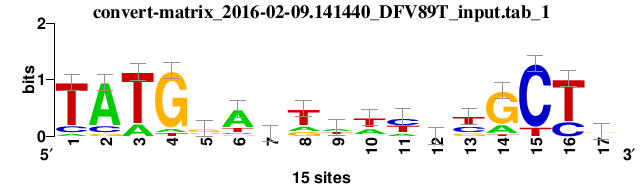
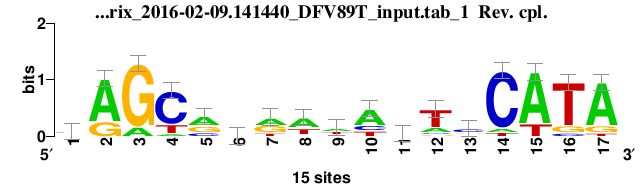

RSAT - convert-matrix result
Server command$RSAT/perl-scripts/convert-matrix -from tab -to tab -i $RSAT/public_html/tmp/www-data/2016/02/09/convert-matrix_2016-02-09.141440_DFV89T_input.tab -pseudo 1 -multiply 1 -decimals 2 -perm 0 -bgfile $RSAT/public_html/data/genomes/Escherichia_coli_K_12_substr__MG1655_uid57779/oligo-frequencies/1nt_upstream-noorf_Escherichia_coli_K_12_substr__MG1655_uid57779-ovlp-1str.freq -bg_format oligos -bg_pseudo 0.01 -logo_format png -logo_file $RSAT/public_html/tmp/www-data/2016/02/09/convert-matrix_2016-02-09.141440_DFV89T_output.tab_logo -return counts,counts,frequencies,consensus,parameters,header,margins,logo -v 1 -to tab -o $RSAT/public_html/tmp/www-data/2016/02/09/convert-matrix_2016-02-09.141440_DFV89T_output.tab
Result
; convert-matrix -from tab -to tab -i $RSAT/public_html/tmp/www-data/2016/02/09/convert-matrix_2016-02-09.141440_DFV89T_input.tab -pseudo 1 -multiply 1 -decimals 2 -perm 0 -bgfile $RSAT/public_html/data/genomes/Escherichia_coli_K_12_substr__MG1655_uid57779/oligo-frequencies/1nt_upstream-noorf_Escherichia_coli_K_12_substr__MG1655_uid57779-ovlp-1str.freq -bg_format oligos -bg_pseudo 0.01 -logo_format png -logo_file $RSAT/public_html/tmp/www-data/2016/02/09/convert-matrix_2016-02-09.141440_DFV89T_output.tab_logo -return counts,counts,frequencies,consensus,parameters,header,margins,logo -v 1 -to tab -o $RSAT/public_html/tmp/www-data/2016/02/09/convert-matrix_2016-02-09.141440_DFV89T_output.tab
; Input files
; input /data/rsat/public_html/tmp/www-data/2016/02/09/convert-matrix_2016-02-09.141440_DFV89T_input.tab
; prior /data/rsat/public_html/data/genomes/Escherichia_coli_K_12_substr__MG1655_uid57779/oligo-frequencies/1nt_upstream-noorf_Escherichia_coli_K_12_substr__MG1655_uid57779-ovlp-1str.freq
; Input format tab
; Output files
; output /data/rsat/public_html/tmp/www-data/2016/02/09/convert-matrix_2016-02-09.141440_DFV89T_output.tab
; Output format tab
; pseudo-weight 1
; Background model
; Bernoulli model (order=0)
; Strand sensitive
; Background pseudo-frequency 0.01
; Residue probabilities
; a 0.29104
; c 0.20741
; g 0.20446
; t 0.29709
;
; MATRIX 1/1 : convert-matrix_2016-02-09.141440_DFV89T_input.tab_1
;
;
; Matrix type: counts
; Pos 1 2 3 4 5 6 7 8 9 10 11 12 13 14 15 16 17
; ----- |--------|-------|-------|-------|-------|-------|-------|-------|-------|-------|-------|-------|-------|-------|-------|-------|-------|
a 1 12 3 1 2 10 4 3 6 5 3 3 0 3 0 0 5
c 2 2 0 0 3 1 4 0 1 1 6 6 5 0 13 4 3
g 0 1 0 13 8 1 1 3 2 1 0 2 3 11 0 0 6
t 12 0 12 1 2 3 6 9 6 8 6 4 7 1 2 11 1
; ----- |--------|-------|-------|-------|-------|-------|-------|-------|-------|-------|-------|-------|-------|-------|-------|-------|-------|
; c.sum 15 15 15 15 15 15 15 15 15 15 15 15 15 15 15 15 15 255
; c.max 12 12 12 13 8 10 6 9 6 8 6 6 7 11 13 11 6 13
; c.min 0 0 0 0 2 1 1 0 1 1 0 2 0 0 0 0 1 0
; c.rng 12 12 12 13 6 9 5 9 5 7 6 4 7 11 13 11 5 13
//
;
; Matrix type: frequencies
; Pos 1 2 3 4 5 6 7 8 9 10 11 12 13 14 15 16 17
; ----- |------|-----|-----|-----|-----|-----|-----|-----|-----|-----|-----|-----|-----|-----|-----|-----|-----|
a 0.08 0.77 0.21 0.08 0.14 0.64 0.27 0.21 0.39 0.33 0.21 0.21 0.02 0.21 0.02 0.02 0.33
c 0.14 0.14 0.01 0.01 0.20 0.08 0.26 0.01 0.08 0.08 0.39 0.39 0.33 0.01 0.83 0.26 0.20
g 0.01 0.08 0.01 0.83 0.51 0.08 0.08 0.20 0.14 0.08 0.01 0.14 0.20 0.70 0.01 0.01 0.39
t 0.77 0.02 0.77 0.08 0.14 0.21 0.39 0.58 0.39 0.52 0.39 0.27 0.46 0.08 0.14 0.71 0.08
; ----- |------|-----|-----|-----|-----|-----|-----|-----|-----|-----|-----|-----|-----|-----|-----|-----|-----|
; f.sum 1.00 1.00 1.00 1.00 1.00 1.00 1.00 1.00 1.00 1.00 1.00 1.00 1.00 1.00 1.00 1.00 1.00 17.00
; f.max 0.77 0.77 0.77 0.83 0.51 0.64 0.39 0.58 0.39 0.52 0.39 0.39 0.46 0.70 0.83 0.71 0.39 0.83
; f.min 0.01 0.02 0.01 0.01 0.14 0.08 0.08 0.01 0.08 0.08 0.01 0.14 0.02 0.01 0.01 0.01 0.08 0.01
; f.rng 0.76 0.75 0.76 0.81 0.37 0.57 0.32 0.57 0.32 0.44 0.38 0.25 0.44 0.69 0.81 0.69 0.31 0.81
//
; consensus tatGgaytwwycyGCyr
; consensus.rc YRGCRGRWWARTCCATA
;
; Matrix parameters
; Columns 17
; Rows 4
; Alphabet a|c|g|t
; Prior a:0.29103950717647|c:0.207409552773937|g:0.204462511450909|t:0.297088428598684
; program tab
; matrix.nb 1
; min.prior 0.204463
; alphabet.size 4
; max.bits 2
; total.information 6.75638
; information.per.column 0.397434
; max.possible.info.per.col 1.58737
; consensus.strict tatGgattatcccGCtg
; consensus.strict.rc CAGCGGGATAATCCATA
; consensus.IUPAC tatGgaytwwycyGCyr
; consensus.IUPAC.rc YRGCRGRWWARTCCATA
; consensus.regexp tatGga[ct]t[at][at][ct]c[ct]GC[ct][ag]
; consensus.regexp.rc [CT][AG]GC[AG]G[AG][AT][AT]A[AG]TCCATA
; residues.content.crude.freq a:0.2392|c:0.2000|g:0.2039|t:0.3569
; G+C.content.crude.freq 0.403922
; residues.content.corrected.freq a:0.2425|c:0.2005|g:0.2040|t:0.3531
; G+C.content.corrected.freq 0.404418
; min(P(S|M)) 1.2909e-26
; max(P(S|M)) 6.35353e-05
; proba_range 6.35353e-05
; Wmin -34.18
; Wmax 13.62
; Wrange 47.8
  ; Host name pedagogix
; Job started 2016-02-09.141440
; Job done 2016-02-09.141441
; Seconds 0.28
; user 0.28
; system 0.04
; cuser 0.53
; csystem 0.06
Tab conversion: /data/rsat/perl-scripts/convert-matrix -v 0 -i /data/rsat/public_html/tmp/www-data/2016/02/09/convert-matrix_2016-02-09.141440_DFV89T_input.tab -from tab -to tab -return counts -o /data/rsat/public_html/tmp/www-data/2016/02/09/convert-matrix_2016-02-09.141440_DFV89T_simple.tab
Result file(s)